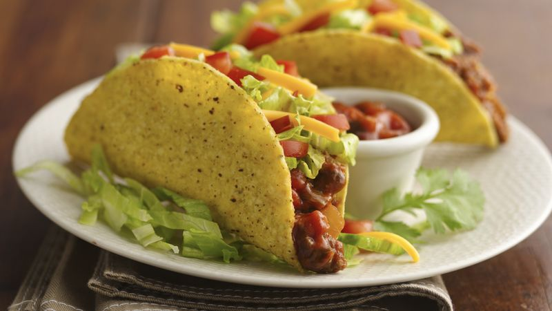

Tacos!

Description
This is an easy fix, just some tacos
Ingredients
- 2 tomater
- 1 gurka
- 1 stor rödlök
- 1 burk majskorn
- 1/4 isbergssallad
- 500g nötfärs
- 2 msk olja
- 1 påse tacokrydda
- 1 1/2 dl vatten
- 12 hårda tacoskal
- 2 dl riven ost
- 2 dl salsa
- 2 dl gräddfil
- Sätt på ugnen enligt anvisningen på tacoskalen.
- Tärna tomater och gurka. Skala och hacka löken. Låt majsen rinna av. Strimla salladen.
- Stek färsen i oljan och krydda med kryddmixen och rör ner vattnet och låt koka några minuter.
- Lägg tacoskalen på en plåt och värm dem mitt i ugnen enligt anvisningen på förpackningen.
- Lägg köttfärsen i tacoskalen, lägg sedan på ost och grönsaker, toppa med salsa och gräddfil.